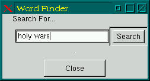
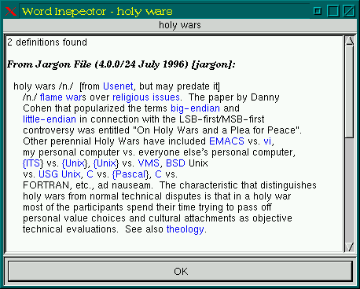

![[ TABLE OF CONTENTS ]](../gx/indexnew.gif)
![[ FRONT PAGE ]](../gx/homenew.gif)


Access to an on-line dictionary has been possible for several years now due to the Webster TCPIP protocol. Webster is useful but the number of servers has been on the decline, and the protocol itself is limited by its dependence on a single dictionary database. Rik Faith, a programmer responsible for many of the essential-but-taken-for-granted Linux utilities, has created a new, more flexible protocol known as DICT. DICT is another TCPIP protocol (usable either over a network or on a local machine) which provides access to any number of dictionary databases. Local access is provided by a client program called dict which contacts the dictd server daemon. Dictd then searches the available databases and makes any hits available to dict, which pipes its output to the default pager on the local machine (usually either more, less, or most). Net access is available from several servers, including the home DICT site. Looking up words while on-line frees the user from needing to install and run the dictd and dict client and server programs (as well as having to make room for the bulky databases on a local disk), but if you have the disk space it's convenient to have the service available at any time.
The dictd and dict programs are licensed under the GPL, so naturally they are set up to use freely available word databases.
DICT is a typical Unix-style command-line set of programs. GUI-fans will regret the absence of a graphical interface, but the glass is really half-full. Due to the absence of oft-troublesome GUI toolkit dependencies, the source for the client and server programs should compile easily. Toolkits come and go, but applications written with a simple console interface can easily be adapted to whatever the future toolkit du jour might be. There are numerous programmers who lack the time or inclination to develop Linux utilities from scratch, but welcome the opportunity to write GUI front-ends to console programs (see the Word Inspector section below).
Compiling and installing dictd and dict isn't difficult, but to make use of them the word databases need to be downloaded and installed. Here is a list of the free databases which are currently available from the DICT FTP site:
All of these files and their indices will occupy about thirty-one megabytes of disk space, roughly the same amount as the WordNet dictionary files alone. The DICT data-files are compressed with a variant of gzip called dictzip, also written by Rik Faith. Dictzip adds extra header information to a compressed file which allows pseudo-random access to the file. When the dictd server processes a request for a word it looks first in the various index files. These files (which are human-readable) are just simple lists with the location of each word within the compressed dictionary file. Dictd is able to use this information to uncompress just the single 64-kb. block of data which contains the word-entry. This greatly speeds up access, as the entire dictionary file doesn't need to be uncompressed and subsequently re-compressed for each transaction. Files compressed with dictzip can be recognized by the *.dz suffix.
Although dictzip doesn't compress quite as tightly as gzip, the added advantage of the header information (at least for the sort of access dictd needs) is a compensation. The above-listed dictionary files would need nearly seventy-five megabytes of disk space if they weren't compressed.
In issue 27 of the Gazette, (April, 1998) I wrote about another dictionary-database system called WordNet. In order to access a DICT database the dict server must be running which communicates with dict client programs, whereas WordNet isn't a client-server program; the small wn program searches the database indices directly. The upshot is that WordNet uses less memory than a DICT system, but since WordNet databases aren't compressed they occupy more disk space than the specially compressed DICT files. DICT files contain more words (along with etymologies, which WordNet lacks) and can be supplemented with new files in the future, but DICT lacks WordNet's powerful thesaurus and lexical usage capabilities. Another factor to consider is that development of WordNet has ceased, whereas DICT is still being improved and the chances of its continued development seem likely. Additionally, DICT can use the WordNet data-files in a compressed format.
Sample configuration files are included with the DICT distribution. The
file /etc/dictd.conf should contain the location of your local
dictionary files in this format:
database web1913 { data "/mt/dict/web1913.dict.dz"
index "/mt/dict/web1913.index" }
database jargon { data "/mt/dict/jargon.dict.dz"
index "/mt/dict/jargon.index" }
The dict client needs to know where the server is; if a local
server is used a simple ~/.dictrc file containing this line will
work:
server localhost
If both ~.dictrc and /etc/dict.conf are missing the dict client program will first attempt to access the www.dict.org web-server; if that fails it will try some alternate sites. To prevent these attempts (when running a local dictd server) just use the above ~/.dictrc file.
Dictd might not be a service which you would want to run all of the time. Though not a large executable, it uses a significant amount of memory, typically four to five megabytes. I surmise that the daemon reads the dictionary index-files into memory when it starts up and keeps them there. This premise also would explain why the word look-ups are so speedy. Memory access is much faster than disk access, and once the daemon determines from the index which sixty-four kilobyte block holds the desired information it can quickly decompress that small chunk of the dictionary file and serve up the word information. I've found that starting dictd while writing or whenever I become curious about word-usage and killing the daemon at other times works well.
Scott W. Gifford has written a nice graphical front-end to the dict
client program called Word Inspector. Here's a screenshot of the initial
window:

And here is one showing the output window:

In the README file accompanying Word Inspector Scott Gifford suggests setting up the application with several different window-manager menu-items. Running wordinspect --define --clipboard will bring up a Word Inspector output window (as shown in the second screenshot) with the contents of the current X primary selection as the input. Alternatively, wordinspect --search --clipboard will cause the initial window to appear with the X primary selection already shown in the entry field, and running just plain wordinspect will bring up an empty initial window, so that a word can be typed in which isn't a mouse-selection. These three commands could be set up in a submenu stemming from a top-level Word Inspector menu-item.
Word Inspector makes good use of right-mouse-button pop-up menus. Right-clicking on any word in a definition pops up a menu allowing you to either open a search (initial) window with the selected word already filled in, or open a definition window for the word. Highlighting a series of words with the mouse, then right-clicking, will enable the same behavior for phrases.
The source of the current version of Word Inspector is this web-site. The GTK toolkit is required for compilation, with version 1.06 recommended. Last modified: Mon 28 Sep 1998